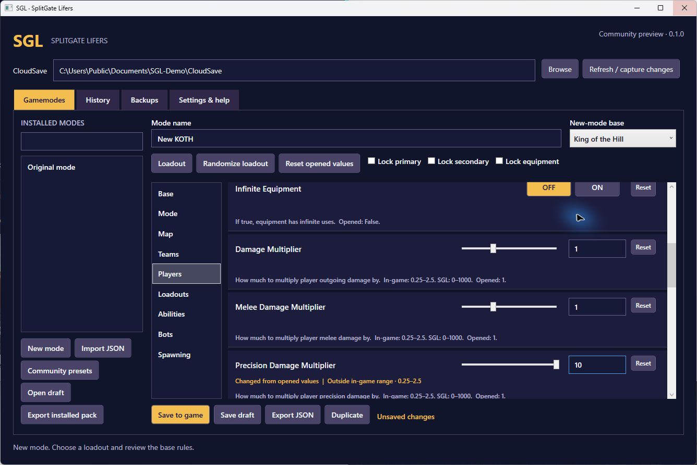
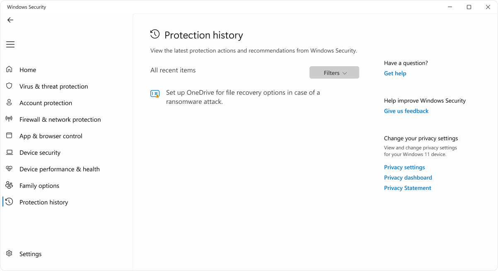

SGL setup guide
Configure gamemodes and install community maps from one Windows app.
Download SGL.zipWindows x64 · Unsigned community application · No separate Git or .NET installation
Download, extract, open
- Download the official release. Use SGLifers/SGL releases. Choose
SGL.zip, not the source-code archive. SHA-256 checksums are attached to each release. - Extract the complete ZIP. Choose a writable folder. Open
SGL.exefrom the extracted folder; keep Guide and ThirdParty alongside it. - Locate your game saves. SGL defaults to your Windows user's CloudSave folder. Use Browse for another location. If no custom mode exists, save one in-game, close Splitgate, then Refresh in SGL.
- Configure and save. Open an installed mode, create a new mode, or choose a community preset. Edit the loadout and rules. Close Splitgate before clicking Save to game.

A running game does not prevent editing or saving a draft. Applying configurations requires the game to be closed.
Install maps and link gamemodes
- Open Maps. Browse the community catalog, search by name or author, and filter by category. The catalog is cached for offline browsing.
- Select a map, close Splitgate, and click Install selected map. SGL downloads the map and registers it in your save index with an automatic backup. For an existing download, choose Import map .bin.
- Choose an installed map and a mode, then click Associate. Several modes can be linked to one map. Double-click a linked mode to open its editor.
- Start Splitgate and select the map and gamemode separately in the custom lobby. An association is an SGL shortcut, not a game rule.
Existing maps and Map Lab edits are kept. Map updates and prefabs are not available in this version. Downloads come from the community repository; it does not provide independent package signatures or checksums.
If Windows blocks or removes SGL
The release is unsigned. A reputation warning, antivirus quarantine, and an organization policy block are different cases. A detection is not proof that a file is safe merely because it is a community app. Verify the official release and the affected file before deciding to allow it.
“Windows protected your PC”
For a verified official SGL release that you trust, the SmartScreen dialog may offer More info followed by Run anyway. Some policies do not offer an override. This action does not restore an EXE removed by antivirus.
SGL.exe disappeared, was quarantined, or was removed
- Open Windows Security, then Virus & threat protection → Protection history.
- Expand the detection associated with SGL. Review the affected path and filename. Windows may require administrator approval to show the details.
- Only if you have verified the release and trust it, use the available Actions → Allow on device action. If it is quarantined, Restore can return it; you may then need to review the resulting detection and allow it.
- If Windows already removed the file, allowing it does not bring it back. Download the official ZIP again and extract it after reviewing the detection.
- Open
SGL.exeagain. If the device is managed or the action is unavailable, ask the device administrator to review the block.

SGL never changes Windows Security settings or adds exclusions. Normal SGL use does not require elevation; Windows Security review can. An update may require another review.
Manage your local library
Drag the vertical dividers to widen the installed-mode list, settings categories, or installed-map/details pane. Widths are remembered across restarts. Use Settings & help → Reset pane widths to restore the defaults.
Select an installed item and choose Delete selected mode or Delete selected map with Splitgate closed. Review the confirmation. SGL creates a backup and moves the item’s archives, including older saves and Map Lab edits, into that backup. Associated maps or modes remain installed.
Deleted gamemodes remain recoverable through History. Use the Backups tab to restore the complete library snapshot. If cleanup reports a locked file, review the retained paths before running MapLoader.
Your gamemode history
SGL captures a baseline on first scan. On later launches or Refresh it compares saved configurations and creates a local Git commit only when something changed. A successful SGL save records a revision immediately. No Git account or upload is involved.
- Open an installed mode.
- Choose History and select two snapshots to compare.
- Choose Restore selected mode from older snapshot to load the old configuration into the editor.
- Review it, close Splitgate and click Save to game. Restoration creates a new revision and preserves later history.

History records game files that were actually saved. It cannot recover unsaved game edits or intermediate edits between scans. Renaming through SGL preserves the mode identity; externally deleting and recreating a mode starts a new identity.
Updates and recovery
SGL checks official releases at startup, downloads verified updates and restarts before editing. Unsaved or invalid editor changes defer replacement. Settings includes an automatic-update toggle and a manual check. Offline or failed update checks leave the installed version available.
The updater verifies a signed manifest and checksum. Windows can still block an unsigned update or helper. If replacement fails, the previous executable is retained and startup failure attempts rollback. Use the official ZIP for manual recovery; keep your SGL data folder.
Preferences, drafts and Git history live under %LOCALAPPDATA%\SGL. Game-save backups live beneath CloudSave\Backup. Restoring a complete manifest backup changes the entire registration list to that earlier point; it differs from restoring one mode revision.
Need help?
Report an issue with your SGL version, the action you tried and the error message. Review logs before sharing them; logs can contain local file paths. Do not post your whole save folder or credentials.
Current scope: all 115 documented advanced settings plus five SGL extras, three creation templates, six community presets, community map installation and local map-to-mode associations. Bots includes difficulty; Spawning includes timed respawns, penalties and spawn selection. Settings absent from a saved base are marked unavailable. Gold markers identify SGL extras and values outside demonstrated in-game ranges. Custom values may be clamped or ignored by the game.